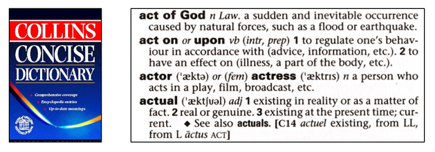

Introduction to Coding and Data Analysis for Scientists
Week 5: Consolidation
Today’s Lecture
- Lecture 5: Consolidation
- Recap: The Course So Far
- Tackling Difficult Problems
- A Worked Example
- Practical
Recap: The Course So Far
- Over the last 4 weeks, we’ve covered the basics of Python
- We’ve looked at:
- Datatypes
- Conditional Logic
- Loops
- Functions
Recap: The Course So Far
- Before moving on to the next parts of the course…
NumPy,PandasandMatplotlib
- … this week we are going to do some “consolidation challenges”
- Using what we have learnt to tackle the kinds of tasks you might encounter in the real world
Aside: Dictionaries
- Before we dive into today’s work, there is one concept we’d like to revisit in more detail
- A dictionary, or
dict, is a data type in Python- It allows us to store
values underkeys
- It allows us to store
- Think of a real-life dictionary
- You look up a word (the
key) - You read its definition (the
value)
- You look up a word (the
- In the same way, a Python
dictlets you- You look up a
key - Get back the
valueassociated with it
- You look up a

Aside: Dictionaries
New values can be added to the dictionary using the syntax
my_dict[key] = value
Aside: Dictionaries
And keys and values can be any datatype you like
- They don’t have to be strings!
Aside: Dictionaries
Dictionaries will be crucial to some of today’s challenges as well as throughout the rest of this course
If you are unsure about these please take the time to read over:
Week 1's intermediate notebookSection: Sets and Dictionaries
You can do this either in today’s class or over the week 6 break
Tackling Difficult Problems
- Today, we’re going to be looking at some challenge problems
- These problems may feel a little more open-ended than you are used to
- This can be a little daunting at first
- But do not worry…
- You already have all the skills necessary to complete the tasks!
- When faced with a difficult coding problem, here’s some general tips to help you get started out
Tackling Difficult Problems
Plan before you code
- Before you start coding, grab a pen and paper and try to solve the problem by hand!
Clarify inputs and outputs
- When getting started think about what you have and what you need – these are probably your inputs and outputs
Look for structure and repetition
- When you convert your thoughts to code, ask yourself which parts of the code are repetitive or self-contained
Tackling Difficult Problems
Divide and Conquer
- Try to break the task down into smaller chunks where possible!
Talk things through
- If you are struggling to get started, talk through the problem with a friend or peer
Use Resources
- Googling and looking up documentation are key coding skills
Trust your own process
- Try to avoid using AI to make structural decisions about your code
Tackling Difficult Problems
Above all, remember…
- Coding can be hard!
It can feel like you are running into the same problems over and over again sometimes
- This is a normal part of the process
If you keep trying you will get there
A Worked Example
- Let’s go through an example together to see these principles in action:
Question: Write some code which, for a given positive integer \(n\), finds the largest prime number that is less than or equal to \(n\).
- Principles:
- Plan before you code
- Clarify inputs and outputs
- Look for structure and repetition
- Divide and conquer
- Talk things through
- Trust your own process
Practical
- We now move over to Python
- Please open week_05_home.ipynb
- For the rest of today, you must work through a Python notebook
- This week is a little different…
- Please choose the challenge according to your course